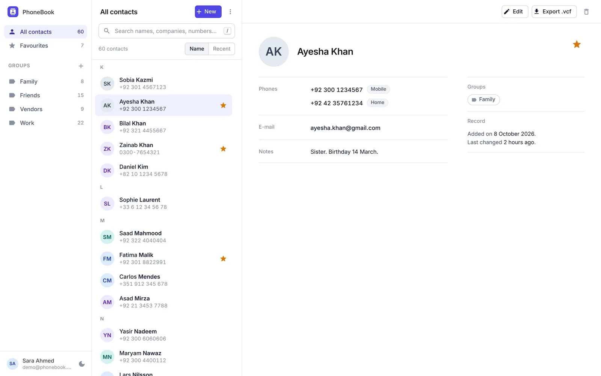
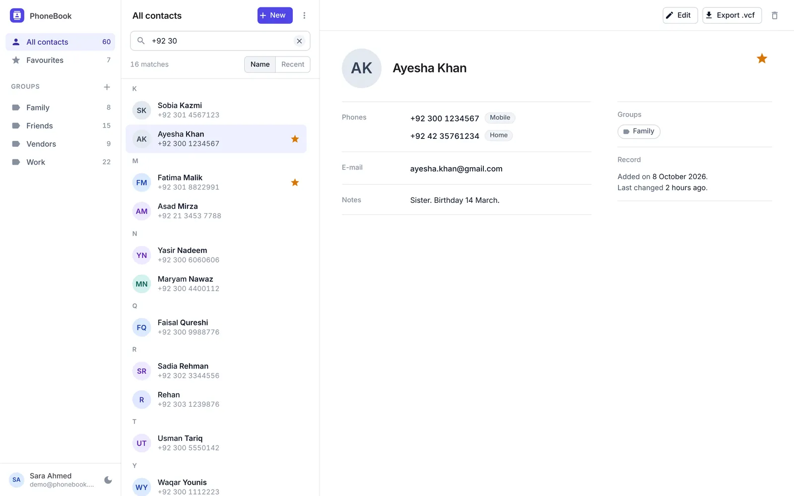
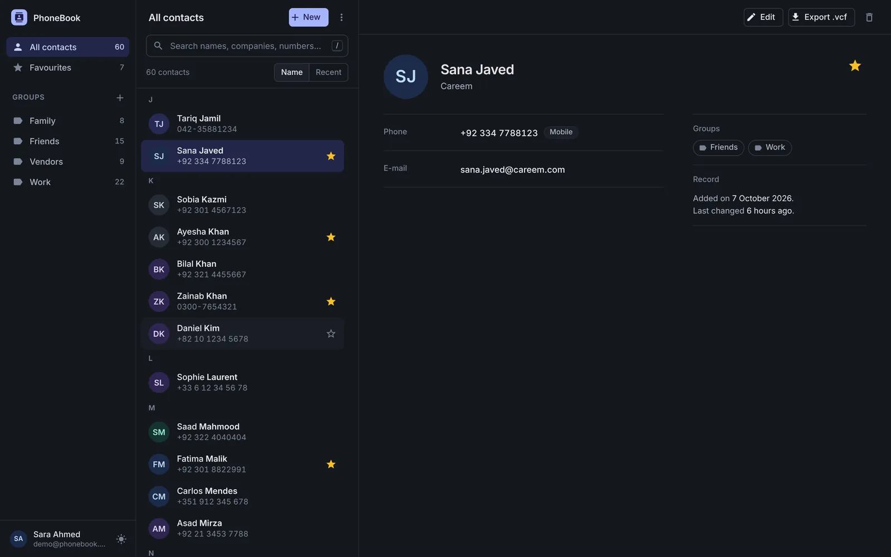
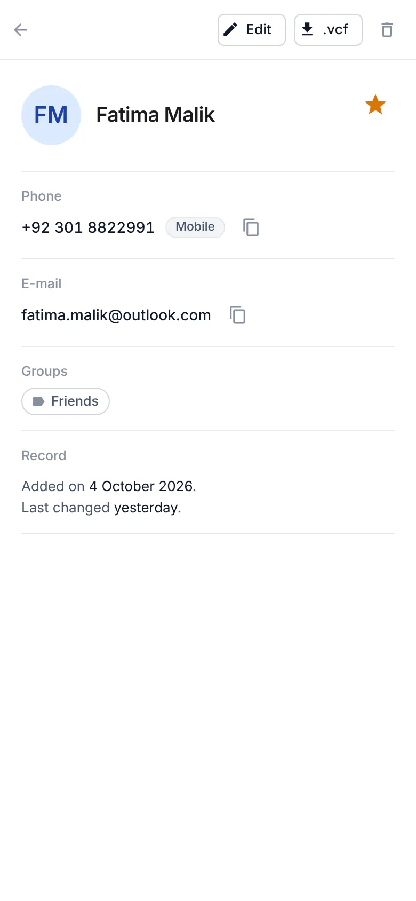

The brief
A phone book is usually a beginner’s exercise. I rebuilt mine to practise what business software needs and small projects usually skip: one operation that touches several tables and either fully happens or doesn’t, data that must never leak between accounts, a standard file format that arrives full of mistakes, and tests that prove all of it over real HTTP.
What it does

- Each contact can have several numbers with labels, an e-mail, notes, groups and a favourite star.
- Search matches names, companies, e-mails and any part of a number, however it was typed.
- vCard 3.0 import and export: everything, one group, a selection, or a single contact.
- Accounts with sign-in; each account sees only its own contacts and groups.
Decisions
Repositories stage changes; the unit of work commits them
A repository in this project can add, remove and query, but it can never save. Saving, and opening or committing a transaction, belong to the unit of work, which holds every repository over one database context. A service that touches contacts, phones and groups therefore commits them together or not at all.
// a repository only stages
void Add(T entity);
void Remove(T entity);
IQueryable<T> Query();
// the unit of work is the only way to persist
Task<int> SaveChangesAsync(CancellationToken ct = default);
Task BeginTransactionAsync(CancellationToken ct = default);
Task CommitAsync(CancellationToken ct = default);
Task RollbackAsync(CancellationToken ct = default);An import is all or nothing
A vCard file from a phone is rarely clean. The import writes contacts in batches of 50 inside one explicit transaction and keeps validating after the first problem, so it can report every bad card at once. Then it rolls back. Either the whole file is imported, or nothing is and the person knows exactly what to fix.
Someone else’s contact is a 404, not a 403
Every query is scoped to the signed-in user. Asking for another account’s contact returns “not found” rather than “forbidden”, so the API never confirms that an id exists. A contact also cannot be put into another user’s group. Both rules have integration tests that sign in as two different people and try.
Search follows how people type numbers
The same number is stored as +92 300 1234567 and typed as 0300-1234567. Search compares digits rather than text and understands the local trunk prefix, so either form finds the contact.

The tests boot the real API
The database provider is a configuration switch, so the integration tests start the actual application on in-memory SQLite and talk to it over HTTP: sign-up and sign-in, validation errors, other users’ data, search, paging, export and import. With the unit tests for the vCard reader and the unit of work, that is 36 tests on the server and 109 specs on the client, run on every push along with a Docker build.
- A_user_cannot_see_or_change_another_users_contact
- Import_is_all_or_nothing_when_a_card_is_invalid
- Search_with_local_trunk_prefix_finds_internationally_stored_number
- Login_with_wrong_password_or_unknown_email_is_401_with_the_same_message
An interface that stays out of the way
The client is Angular 19 with signals and Angular Material, laid out as a list and a detail pane. The detail pane uses a container query to move groups and the record beside the details when there is room, and avatars use five tones drawn from the accent colour so a long list reads as one palette. Dark mode is designed, not inverted.


Under the hood
The technical choices, one at a time. Open any of them.
Four layersArchitecture
Controllers do HTTP only. Services hold the business rules, DTOs, vCard reading and writing, and token issuing. The domain holds the entities. Infrastructure holds the DbContext, the provider switch, the generic repository and the unit of work.
Generic Repository and Unit of WorkPatterns
A repository only stages changes and never saves. Services depend on IUnitOfWork alone and never see the DbContext, so one operation that touches several repositories commits together or not at all. The vCard import stages contacts in batches of 50 inside one explicit transaction.
Sign-in tokens, standard library onlyJWT, without the Identity framework
PasswordHasher<User> for credentials and a signed HS256 token with sub, name and email claims. Issuer, audience and lifetime are validated, and the API refuses to start with a missing or short secret.
Each account sees only its own dataIsolation
Every query is scoped to the caller. Another user’s contact or group is a 404, never a 403, so ids do not leak.
vCard 3.0 without a libraryFile format
A small reader and writer that handles folded lines, escaped commas, semicolons and newlines, and TEL;TYPE= mapping, and skips garbage between cards.
Errors as a contractRFC 7807
Data annotations on inputs, and RFC 7807 ProblemDetails for every failure path through one exception handler.
Designed to be testedxUnit, WebApplicationFactory
The database provider is a configuration switch between SQLite and SQL Server, so the real app boots on in-memory SQLite inside WebApplicationFactory. 36 API tests exercise HTTP, sign-in and validation end to end, and 109 client specs run beside them on every push.
What I’d do differently
The client specs test components and services in isolation; the next step is a few browser tests that walk through sign-in, editing and import against the real API. I would also add contact photos, and put a demo online so it can be tried without cloning the code.